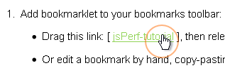
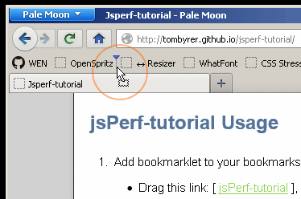
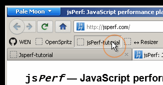
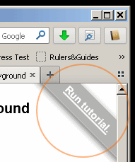
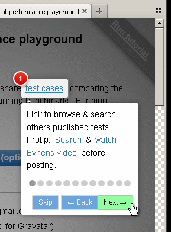

A bookmarklet to run a tutorial on jsPerf.com homepage using Intro.js.
If you don't know, jsPerf is a croud-sourced JavaScript speed test site; helpful if you want to benchmark one function against another. Disclaimer: This project is not connected to jsPerf or maintainers.
jsPerf-tutorial Usage
Tested on Windows Firefox, Chrome, IE10.
- Add bookmarklet to your bookmarks toolbar ("Favourites" in IE):
- Drag this link: [ jsPerf-tutorial ], then release on your bookmarks toolbar.
- Or edit a bookmark by hand, copy-pasting this into the location field:
javascript:(function(){var%20e=document.createElement("SCRIPT");e.type="text/javascript";e.src="//tombyrer.github.io/jsperf-tutorial/jsperf-tutorial.js";document.getElementsByTagName("body")[0].appendChild(e)})();(For Android, you might have to swap%20for an actual space.) - Go to add test | http://jsperf.com/, or enter
/editafter an existing test. - Run bookmarklet from your toolbar.
- At the upper-right hand corner of the page, you'll see a "Run tutorial" banner appear in a second. Click there, then you should see a modal popup, highlighting a field.
- Use the [Enter] key or the [Next ->] button to step though the tutorial.
- To end, click anywhere outside of modal or [Skip].
Visual instructions




Helping | Bug-reporting
You can send an issue if you need help, but first please read CONTRIBUTING.
Licence
MIT